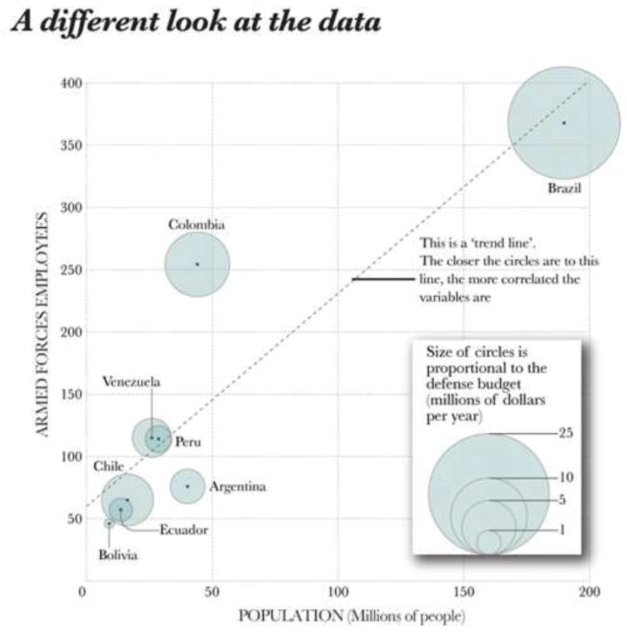
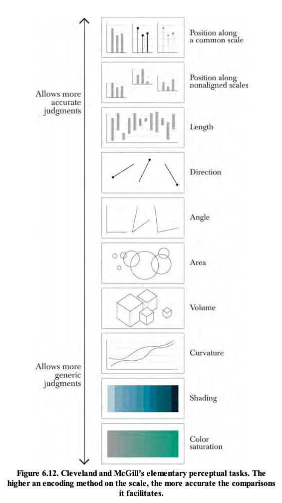
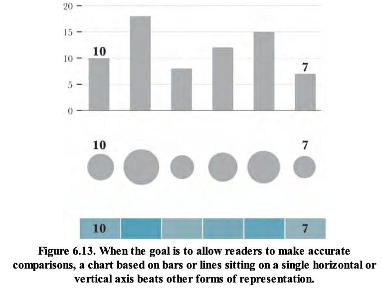
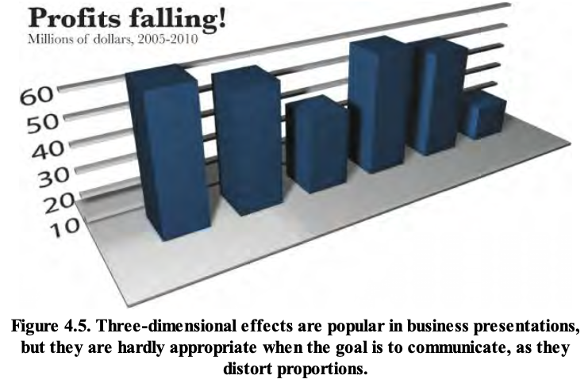

09wk-2: 훌륭한 시각화 (2)

1. 강의영상
2. Ref
Cairo, A. Functional Art, The: An Introduction to Information Graphics and Visualization, New Riders, 2012. San Francisco, US.
- ((일반적생각, 카이로의 생각), 제 생각)으로 나누어서 설명
3. Presentation vs Exploration
A. Presentation

- 프리젠테이션방식의 시각화는 화자가 다듬은 이야기를 전달하기에 좋은 시각화이다. 즉 잘 정리된 메시지를 전달하기에 좋다.
B. Exploration

- 문학적유기체라는 작품이다.
- 어떤 소설책을 시각화.
- 수형도 + 칼라
- 수형도의 의미: 단원 <- 문단 <- 문장 <- 단어
- 색깔: 여행, 음악, 파티 등 소설에서 자주 등장하는 소재 (색은 범주형 변수를 표현하기에 뛰어남)
- 익스플로래이션 방식은 독자가 스스로 그림에서 메시지를 찾아낸다.
- 소설을 읽어보지 않은 사람: 이 그래픽으로 소설책의 전체 주제를 미리 파악가능
- 소설을 이미 읽어본 사람: 분석 & 탐구를 할 수 있음. ex: 파티와 음악이 동시에 등장하는 경우가 많다.
C. 절충
- 카이로: 사실 프리젠테이션과 익스플로레이션은 절충가능함

## 이 그림을 보면 아래의 코드가 생각나야함
fig = ggplot(tidydata)
line = geom_line(aes(x=소득, y=불평등, color=정부))
text = geom_text(aes(x=소득, y=불평등, label=연도))
fig + line + text - 초록색정부: 소득이 증가 & 불평등이 훨씬 더 증가
- 갈색정부: 매우 빠른 경제 성장
- 포인트간의 간격이 조밀하다 = 변화가 더디다 // 포인트간의 간격이 넓다 = 변화가 빠르다.
- 언뜻보기에는 우리에게 익숙한 라인플랏인듯 보이지만 의외로 정보를 해석할만한 요소가 있다.
익스플로레이션형의 그래프는 그릴줄도 알아야 하지만 남이 그린 그래프를 해석할 수도 있어야함.
4. 이성적 낙관주의
A. 인구문제
- 주장1: 가난한 나라에서 애를 너무 많이 낳음 \(\to\) 세계인구가 90억까지 증가할 것이다. (현재 70억)
- 주장2: 잘사는 나라에서는 애를 적게 낳음 \(\to\) 고령화 문제
B. 리들리의 메시지
- 둘다 틀렸다.
- 가난한 나라의 출산율은 점점 감소
- 잘사는 나라의 출산율은 점점 증가
- 세계의 인구는 안정화 될 것 (증가하지도 감소하지도 않는다) + 고령화문제도 오지 않음 (잘사는 나라에서 출산율이 증가하니까)
- 아래의 그림이 그 증거이다.

C. 카이로
- 리들러의 메시지는 아래의 그림들이 더 잘 전달한다.

## 이 그림을 보면 아래의 코드가 생각나야함
fig = ggplot(tidydata)
line = geom_line(aes(x=연도, y=인구증가율, color=국가))
fig + line
# 출력 후 회색부분은 illustrator를 이용하여 처리함- 노르웨이, 영국, 스웨덴, 영국, 스페인, 이탈리아의 경우 출산율이 반등함 (일본과 동일의 경우는 감소세가 아주 누그러듬)
- 인도, 브라질, 중국과 같은 나라는 출산율이 대폭감소
D. 제 소감
- 어떠한 현상을 살펴볼때 그것의 부분집합들이 역시 그러한지 살펴보는것은 기본임
- 중요한 선을 제외한 나머지는 회색처리(adobe illustrator 사용) 한 것이 시각적으로 우수하며, 인상적이었음
- 과학적인 논문작업에 들어갈 그림이라면 임의로 회색처리한 것이 다소 비판을 받을 수 있음.
5. 시각화예시들
A. 상관관계의 해석

## left
fig = ...
point = geom_point(aes(x=출산율, y=1인당소득))
smooth = geom_point(aes(x=출산율, y=1인당소득))
text = geom_text(aes(x=출산율, y=1인당소득, label=국가))
fig + point + smooth + text
## right
fig = ...
point = geom_point(aes(x=출산율, y=여중생비율))
smooth = geom_point(aes(x=출산율, y=여중생비율))
text = geom_text(aes(x=출산율, y=여중생비율, label=국가))
fig + point + smooth + text- 해설: 그림1.7 당신이 더 교육받고 부유할수록, 가질 아이들의 수는 적어집니다.
- 소감: 문장표현이 좀 아쉽네? 여중을 다 때려부시면 출산율이 올라가나요???
B. 남미국가들의 국방력
- 아래는 남미국가들의 국방력을 시각화한 그림

- 쓸모없는 그래픽
- 뭐 기억나는 것이 있나요?
- 아래가 더 우수한 그림이다. 더 정확한 비교를 할 수 있어요.

- 그리고 위의 그림보다 아래의 그림이 더 우수한 시각화이다.

- 브라질의 국방력은 모든 지표에서 1등이다. 우선 1. 군인수도 많고(왼쪽그림) 2. 예산도 많이 투자하는 것 같다(가운데그림).
- 그런데 인구가 흑막인것 같다(오른쪽그림).
소감: 하이라이팅이 우아함..
- 흑막을 제거

- 그런데 사실 흑막을 제거하고 보니까 1. 인구당 군인수도 많지 않고 (왼쪽그림) 2. 인구당 국방비 지출도 3등 수준으로 높지 않고 (가운데 그림) 3. 군인당 교육투자비도 높지 않다 (오른쪽 그림)
- 즉 내실이 없다는 의미
- 최종적으로 제안하는 그래프

- 위의 2개: 이미 살펴봄.
- 좌측하단: 산점도가 추가되었네?
- 우측하단: 관심있는 그래프가 아님
# 좌측하단의 그래프
fig = ...
point = geom_point(aes(x=인구, y=군인수, size=예산))
fig + point사실 저는 아래의 그래프가 좋은 시각화라고 생각안해요

- 1사분면의 의미: 인구도 높고 군인수도 많은 나라 (똑같은 정보, 의미가 없다. 마치 \(x\)축이 토익점수, \(y\)축이 텝스점수 같은느낌임)
- 모든 점들이 직선에 몰려있다면? \(\to\) 왜 2차원으로 표현함?
- 저같으면 aes(x='예산(인구효과제거)', y='군인수(인구효과제거)',size='인구')로 할 것 같아요.
- 1사분면의 의미: 예산도 많이 쓰고 군인수도 많은나라 = 콜롬비아.
- 4사분면의 의미: 예산은 많이 쓰는데 군인수가 적은나라 = 브라질
- 산점도에서 데이터를 한눈에 파악하고 특징을 요약하기 위해서는 \(x\)축과 \(y\)축에 너무 비슷한 성질의 변수로 설정하지 마라.
아래중 어떤것이 더 바람직한 그래프일까?
fig1 = ggplot() + geom_point(aes(x='토익', y='텝스', color='합/불', shape='회사의종류'))
fig2 = ggplot() + geom_point(aes(x='토익', y='GPA', color='합/불', shape='회사의종류'))fig2가 더 합리적이지 않나?
C. 스페인의 실업률

- 명암으로 왜 크기비교를 하는것인가?
- 비교를 위해서는 바플랏이 더 우수하다.

D. 은행들의 시가총액
- 카이로교수님의 강의자료에 등장하는 그림
- 회색이 befor, 검은색이 after

- 크기비교는 버블로 하는것이 아니다.
- 우리눈은 작원원이 큰원의 절반정도 차지한다고 느껴진다.

- 그렇지만 실제로는 아래와 같음

- 버블차트는 크기를 왜곡시킨다.
E. 분열된 유권자들
- 하지만 아래의 버블차트는 우수하다. (왜? 크기비교 자체가 목적이 아니므로)

- 선거지도는 수치비교에 별로 관심이 없다.
- 대신에 민주당표와 공화당표가 어떤 지역에 몰렸는지 파악하는 것이중요
- 따라서 aes중 가장 중요한 \(x\), \(y\)를 모두 지역정보를 표현하기 위해 투자함
좋은 aes 속성들

위로 갈수록 좋아!

F. 잡스의 시각화
- 국민상식: 크기비교에서 3D플랏은 좋지 않음

- 그런데 스티븐잡스는 아래와 같이 시각화를 했음.

- 잘 몰라서 한것일까? 고의로 한것일까?
- ref: https://paragraft.wordpress.com/2008/06/03/the-chart-junk-of-steve-jobs/
6. 시각화의 정석
- 시간경과에 따른 변화를 보여주고 싶으면 라인플랏, 비교를 하고 싶다면 바플랏, 관계를 알고싶다면 산점도.